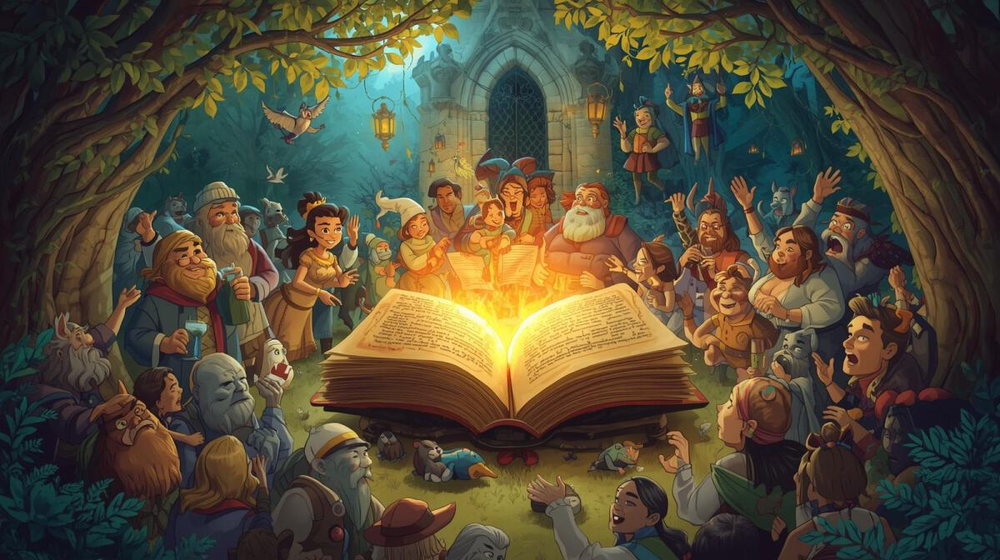

La fête
Bilan du jeu : Maintenant que vous connaissez l'ordre du schéma narratif du conte, à votre tour d'en créer un en suivant ces étapes :
Impossible d'accéder à la ressource audio ou vidéo à l'adresse :
La ressource n'est plus disponible ou vous n'êtes pas autorisé à y accéder. Veuillez vérifier votre accès puis recharger la vidéo.
Les étapes de création
Les étapes de création que vous devrez suivre :
5 étapes
1. Rédaction du scénario (Le brouillon) :
rédigez votre propre conte.
les 5 étapes du schéma narratif doivent être présentes : Situation initiale, Élément déclencheur, Péripéties (défis/missions), Dénouement et Situation finale.
2. Le Découpage Séquentiel :
le conte est divisé en plusieurs scènes (généralement entre 8 et 12 planches).
chaque planche doit représenter un moment clé de l'histoire
3. La Réalisation des Illustrations (Le Recto) :
dessinez chaque scène sur le recto de feuilles cartonnées de format A3.
il est important de laisser une marge sur les côtés pour que les dessins restent visibles une fois insérés dans le butai (le théâtre en bois).
4. L'Écriture du Texte (Le Verso décalé) :
c'est l'étape la plus technique : le texte de la planche n°1 doit être écrit au dos de la dernière planche.
le texte de la planche n°2 est écrit au dos de la planche n°1, et ainsi de suite. Cela permet au conteur de lire le texte de la scène que le public est en train de regarder.
5. La Mise en Voix et la Performance :
entraînez-vous à faire glisser les planches de manière fluide.
entrainez-vous à faire les intonations.
